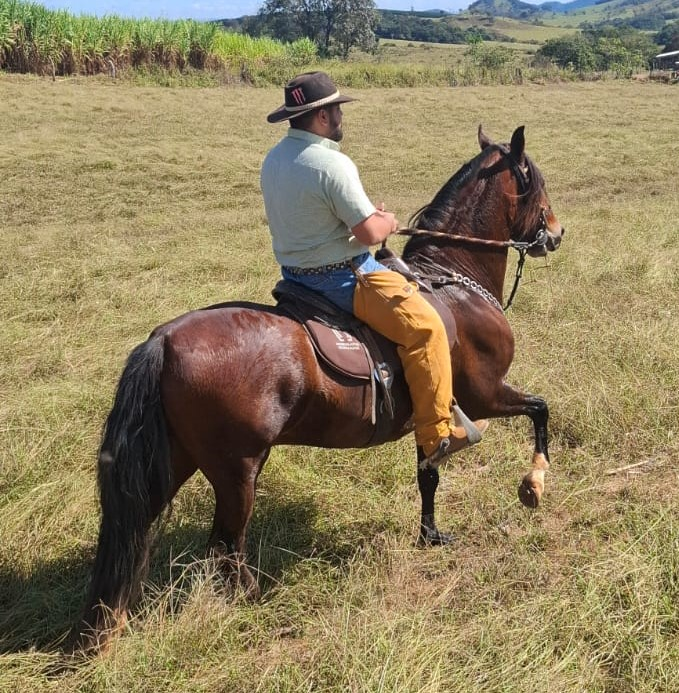

Tudo começou comigo, Fabrício, comprando ração para mim e para meus amigos. Eles me pagavam o valor, e eu buscava a ração para eles. Até que, um dia, outro conhecido pediu para que eu comprasse ração para ele. Esse conhecido falou para outro, que falou para outro, e assim por diante.
Os 200 kg de ração que eu comprava já não eram mais suficientes. Passei a comprar 300 kg, depois 400 kg, 500 kg, até que, um dia, cheguei a comprar 1 tonelada de ração. Já não era mais possível guardar tudo em um único lugar.
Depois de algum tempo, consegui alugar um local para armazenar as rações e, assim, comecei a transformar aquele trabalho em uma loja.

-Fabricio Resende Arriel dono da Pantufa Rações